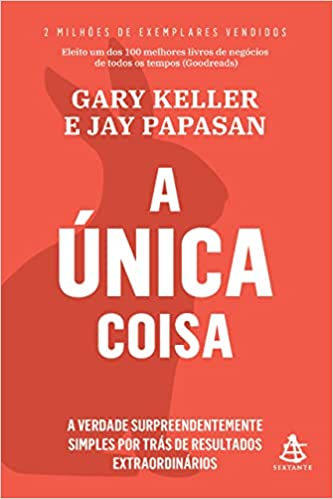
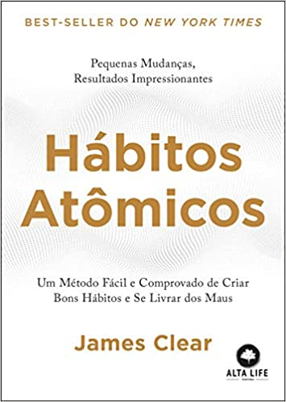
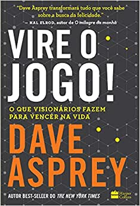
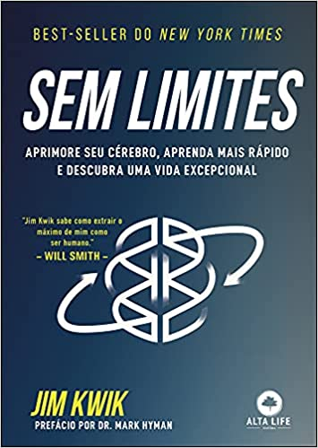
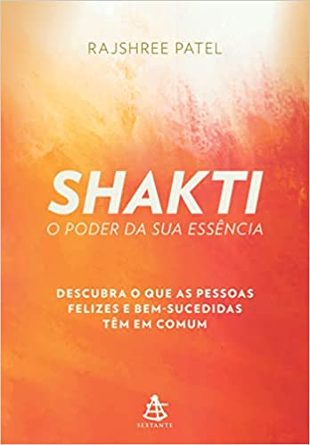
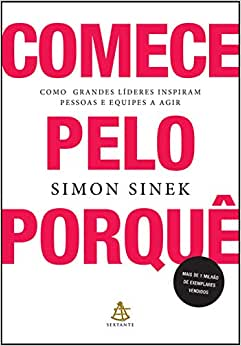
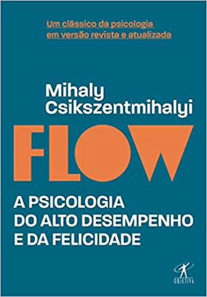
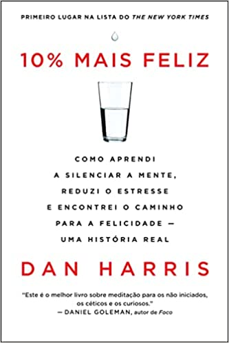

10 Livros Para Aumentar Sua Produtividade
1 - Trabalhe 4 Horas por Semana
O que você faz? Para Tim Ferriss, o autor deste livro, esta não é uma pergunta fácil de responder. Dependendo do momento em que alguém fizer essa pergunta ao controvertido professor-convidado da Universidade de Princeton, ele poderá responder: 'Cruzo a Europa como piloto de motocicletas'. 'Ando de esqui pelos Andes'. 'Faço mergulhos no Panamá'.
'Danço tango em Buenos Aires'. Ele passou mais de cinco anos aprendendo os segredos dos novos ricos, uma subcultura em franco crescimento que abandonou o 'plano de adiar a vida' (escravo-poupador-aposentado) e passou a dominar as novas moedas de troca tempo e mobilidade para criar estilos de vida luxuosos no aqui e agora.
Seja você um trabalhador sobrecarregado ou um empresário preso ao próprio negócio, este livro é a bússola para um mundo novo e revolucionário. Junte-se a Tim Ferriss e descubra:- Como ensinar seu chefe a dar mais valor ao seu desempenho do que à presença. - Como cultivar a ignorância seletiva e gerar tempo com uma dieta de pouca informação.- Quais são os segredos de gestão dos CEOs por controle remoto.- Como preencher o vazio e criar uma vida plena depois de eliminar o trabalho e o escritório.
2 - A Única Coisa
Não importa o objetivo, não importa o destino, a jornada para qualquer coisa que você queira começa sempre com um único passo. Esse passo se chama a Única Coisa.
VOCÊ QUER MENOS Menos distrações, menos estresse e menos correria. Quer saber lidar com a enxurrada diária de e-mails, notícias e reuniões que suga sua energia e prejudica seu desempenho, gerando frustração e sobrecarga.
E VOCÊ QUER MAIS Mais produtividade. Mais qualidade no que faz. Mais tempo para dedicar a si mesmo e ao que realmente importa para você.
VOCÊ PODE TER OS DOIS ? MENOS E MAIS Como? Focando na sua Única Coisa.
Neste livro, você vai aprender a: • Reduzir o foco para se concentrar no que é mais importante • Criar listas de sucesso, em vez de listas de tarefas • Eliminar atividades desnecessárias • Empregar sua energia de forma mais eficaz • Encontrar seu propósito e estabelecer prioridades • Se concentrar em sua Única Coisa para colher resultados extraordinários
3 - Hábitos Atômicos

Pequenas mudanças, resultados impressionantes. Não importa quais sejam seus objetivos, Hábitos Atômicos oferece um método eficaz para você se aprimorar ― todos os dias. James Clear, um dos mais expoentes especialistas na criação de hábitos, revela as estratégicas práticas que o ensinarão, exatamente, como criar bons hábitos, abandonar os maus e fazer pequenas mudanças de comportamento que levam a resultados impressionantes. Se enfrenta dificuldades para mudar seus hábitos, o problema não é você, é o sistema escolhido. Os maus hábitos se repetem sem parar porque você está usando o sistema errado, e não porque não queira mudar.Assim, suas limitações não são a complexidade de seu objetivo, mas a inadequação de seus sistemas.
Neste livro, você aprenderá um método comprovado capaz de levá-lo a novos patamares. Clear é conhecido por sua habilidade em transformar tópicos complexos em comportamentos simples que podem ser facilmente aplicados à vida cotidiana e profissional. Seu método, desenvolvido a partir de conceitos comprovados da biologia, psicologia e neurociência, é um guia descomplicado para tornar os bons hábitos inevitáveis e os maus, impossíveis. Ao longo desta jornada, os leitores serão inspirados e entretidos por histórias de medalhistas de ouro em Olimpíadas, artistas premiados, líderes de negócios, médicos que salvam vidas e astros da comédia que usaram a ciência dos pequenos hábitos para dominar seu ofício e se lançar ao topo de suas áreas de atuação.
Hábitos Atômicos remodela sua forma de pensar em avanço e sucesso e traz as ferramentas e estratégias de que precisa para transformar seus hábitos ― seja você técnico de um time almejando a conquista de um título, uma organização com pretensões de reinventar seu setor ou simplesmente um indivíduo que deseja parar de fumar, perder peso, reduzir o estresse ou atingir qualquer outra meta. Descubra o Segredo dos Resultados Permanentes Repleto de estratégias testadas e aprovadas de autoaprimoramento, Hábitos Atômicos ensinará você a construir hábitos que funcionem para - e não contra - você.
4 - Vire o Jogo
Quando Dave Asprey iniciou uma jornada para melhorar cada aspecto de sua vida, ele procurou adquirir tanto conhecimento quanto possível de pessoas que considerava visionárias: grandes mentes, famosas ou não, de diversas áreas do conhecimento humano. Pessoas que influenciam ou que são pioneiras em novos campos de estudo: de bioquímicos de laboratórios desconhecidos a empresários inovadores, passando por neurocientistas e mestres da meditação. Levado a compartilhar essa sabedoria, Dave criou o podcast Bulletproof Radio e envolveu seus convidados em conversas esclarecedoras. Ele queria saber: o que era mais importante para eles? Como o trabalho que faziam impactava o mundo? Como os ouvintes poderiam usar aquele aprendizado em suas vidas? E, acima de tudo, quais eram as três principais recomendações deles para qualquer pessoa que quisesse ser melhor em tudo que faz como ser humano? Como o verdadeiro hacker que é, Dave fez uma análise estatística das respostas de mais de 450 pessoas e as destrinchou em três categorias: como se tornar mais inteligente, mais rápido e mais feliz. Vire o jogo! é o resultado da imersão do autor nessas entrevistas, detalhando 46 “leis” científicas para a melhora de desempenhos na vida pessoal e profissional. Contando com a genialidade de nomes como Hal Elrod, Tim Ferriss, Arianna Huffington, Esther Perel, Daniel Amen e David Perlmutter, Vire o jogo! oferece aos leitores conselhos práticos que geram recompensas imediatas. Cobrindo diversos assuntos, desde a derrota do medo e da insegurança até acabar com o poder que o desejo tem sobre você e focar no que realmente importa, Dave divide os segredos dos visionários da atualidade para ensinar a todos nós como vencer na vida.
5 - Sem Limites
Finalmente, um manual para seu cérebro. Treinador cerebral de celebridades, Jim Kwik revela o que os melhores fazem para atingir resultados em nível mundial. Você não tem limites. Apesar do que outras pessoas já lhe disseram, seu potencial é infinito ― quando você sabe usar o cérebro. Este livro inovador revela práticas baseadas na ciência e técnicas comprovadas usadas pelos melhores profissionais do planeta para atingir resultados em nível mundial.
6 - Shakti

Todo mundo conhece aquele magnetismo indescritível que podemos sentir na presença de pessoas bem-sucedidas, vibrantes, dinâmicas e verdadeiramente felizes.
Qual é o segredo que liberta alguns das crenças limitantes e lhes permite viver sua grandeza interior, enquanto outros simplesmente levam a vida?
Neste livro, Rajshree Patel revela o poder transformador da sua essência e a profunda sabedoria dos antigos sábios sobre o funcionamento da mente, mostrando como você pode se livrar dos condicionamentos que esgotam o poder que há dentro de você. Ela também ensina a mergulhar na fonte de inteligência e sabedoria que está além do pensamento racional – o que, na tradição védica, é conhecido como Shakti: a pura energia de transformação, a força criativa original da qual todas as coisas surgem.
Com ferramentas, dicas e técnicas acessíveis para nossa vida diária moderna, Shakti: O poder da sua essência é o guia indispensável para você alcançar mais sucesso físico, mental e emocional, para reconquistar seu poder interior e entrar em contato com a energia ilimitada da vida.
7 - Comece Pelo Porquê

Por que algumas pessoas e organizações são mais inovadoras, admiradas e lucrativas do que outras? Por que algumas despertam grande lealdade por parte de clientes e funcionários?
Para Simon Sinek, a resposta está no forte senso de propósito que as inspira a darem o melhor de si para uma causa expressiva – o porquê.
Ao publicar esse livro, o autor iniciou um movimento que tem ajudado milhões de pessoas a encontrar um sentido maior no próprio trabalho e, assim, inspirar colegas e clientes.
Ilustrando suas ideias com as fascinantes histórias de Martin Luther King, Steve Jobs e os irmãos Wright, Simon mostra que as pessoas só irão se dedicar de corpo e alma a um movimento, ideia, produto ou serviço se compreenderem o verdadeiro propósito por trás deles.
Nesse livro, você verá como pensam, agem e se comunicam os líderes que exercem a maior influência, e também descobrirá um modelo a partir do qual as pessoas podem ser inspiradas, movimentos podem ser criados e organizações, construídas. E tudo isso começa pelo porquê.
8 - O Caminho do Artista
O caminho do artista reúne uma série de exercícios, reflexões e ferramentas para ajudar você a despertar sua criatividade, recuperar a autoconfiança e se livrar dos bloqueios criativos.
Organizadas num programa de 12 semanas, essas técnicas vão guiá-lo por uma viagem de autodescoberta, ajudando-o a enfrentar seus medos, crenças e inseguranças – os maiores obstáculos para quem deseja expressar qualquer forma de arte.
Esse livro desmistifica a ideia de que o processo criativo precisa ser sofrido e extenuante, embora ele requeira uma boa dose de persistência e prática. Com este método, você vai aprender a abandonar as desculpas que o impedem de transformar suas ideias em realidade.
Você vai descobrir como criar com mais liberdade e menos autocrítica, usando de forma consciente o potencial criativo que estava represado até agora.
Esta é uma obra fundamental para escritores, poetas, pintores, músicos e qualquer pessoa que deseje trazer um pouco mais de inspiração à sua vida.
9 - Flow

Durante mais de vinte anos, o renomado psicólogo Mihaly Csikszentmihalyi pesquisou sobre o estado de concentração total e satisfação profunda. Seus estudos revelaram que o que torna uma experiência genuinamente agradável é o que ele chama de “flow” ― um momento de completa concentração, em que estamos tão absortos em uma atividade que conseguimos alcançar um estado ideal de felicidade.
Neste livro revolucionário, ele explica como esse mecanismo funciona no comportamento humano e o que podemos fazer para aprimorá-lo. Flow é um clássico sobre felicidade e uma das grandes contribuições à psicologia contemporânea.10 - 10% Mais Feliz

Dan Harris era um jornalista promissor, que construía com garra sua carreira de apresentador na rede de televisão americana ABC News. Mas a obsessão pelo trabalho, a autocrítica exagerada e a extrema competitividade o levaram a um ponto sem volta: o dia em que teve um ataque de pânico ao vivo, na frente de milhões de telespectadores.
A partir dali, ficou claro que algo precisava mudar – e ele acabou embarcando numa inesperada odisseia através do mundo da espiritualidade. Apesar de declaradamente agnóstico, Dan precisou admitir que ficara intrigado com aquele universo.
Com certa relutância, ele descobriu que a fonte de seus problemas era justamente aquilo que considerava seu maior aliado: a voz incessante dentro de sua cabeça, que o impelia sempre a querer mais, fazer mais, se esforçar mais.
Todos nós temos essa voz. É ela que nos faz ter preocupações excessivas, julgar os outros, ruminar o passado e temer o futuro. É ela que nos torna tensos, ansiosos, irritados e frustrados.
Assim como a maioria das pessoas, Dan acreditava que era impossível controlar essa voz. Mas ele encontrou na meditação uma maneira eficaz de acalmar seus pensamentos, equilibrar suas emoções e se tornar uma pessoa melhor – sem perder a energia para lutar por aquilo que deseja.
Fugindo de clichês e sentimentalismos, ele divide com o leitor suas dúvidas, desconfianças e descobertas, narrando de forma hilária os inusitados passos dessa jornada: de entrevistas duras com Eckhart Tolle, Dalai Lama e Deepak Chopra até um retiro de dez dias que fez ruir sua resistência.